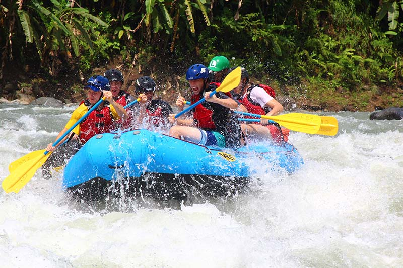
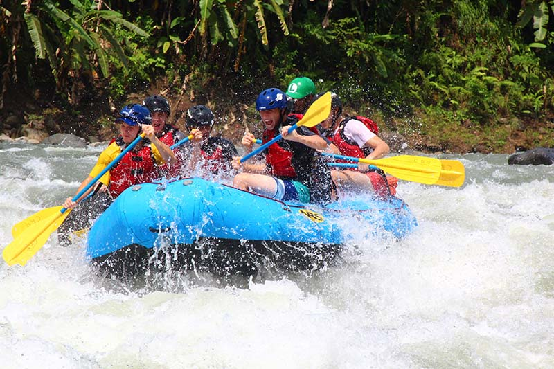

BYU IDAHO SPORTS PLATFORM ( CLICK HERE)
BYU IDAHO SPORTS PLATFORM ( CLICK HERE)
History
Nigeria White Water Rafting, founded in 2025 by Sunday Prince Augustine, brings the thrill of rafting to Nigeria. The company blends a passion for adventure with innovative technology, offering exciting rafting trips and a seamless online experience for booking. With safety as a top priority, it aims to become a leader in adventure tourism, providing unforgettable memories for every adventurer.Adventure Awaits You!


 
